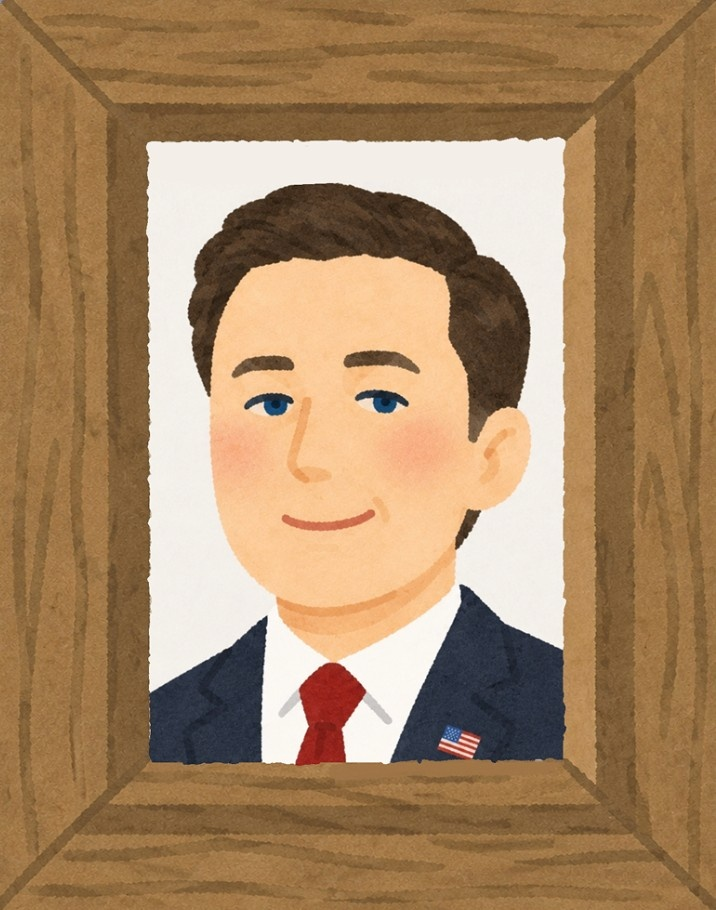
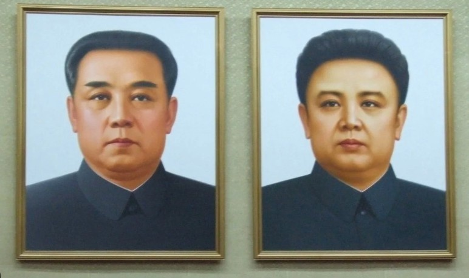
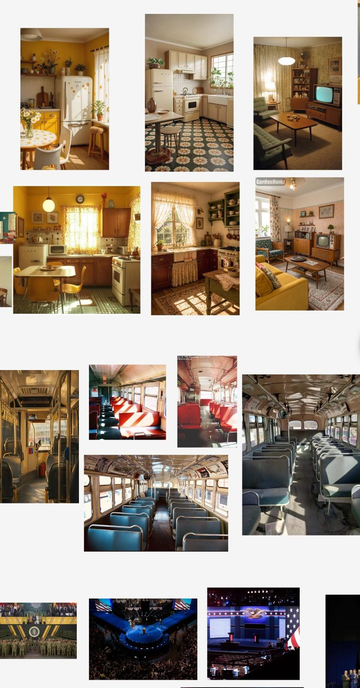
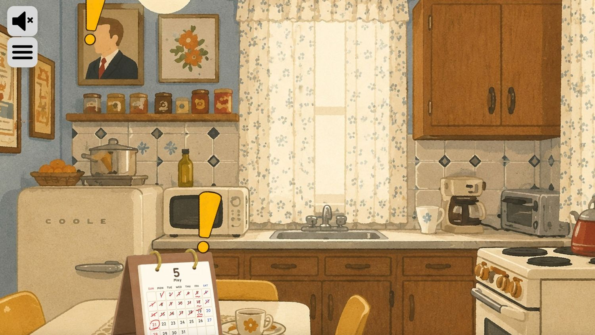
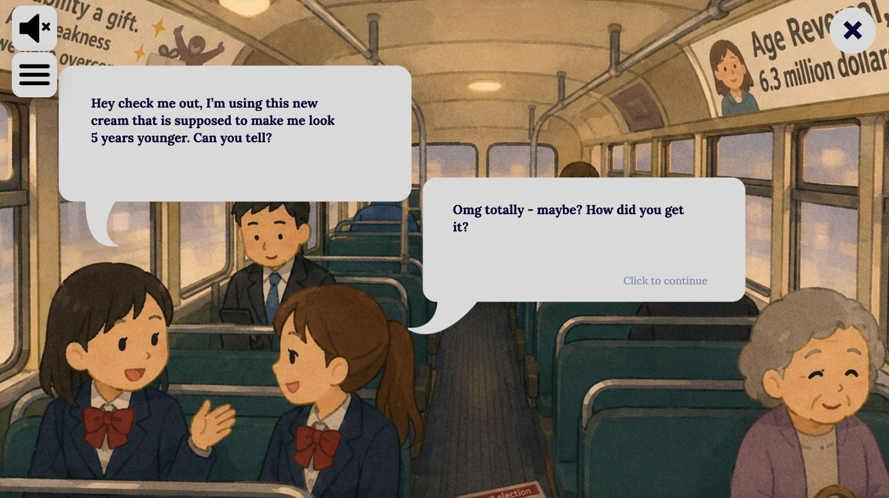
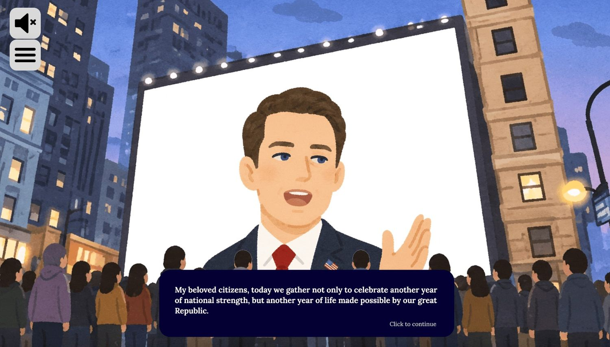
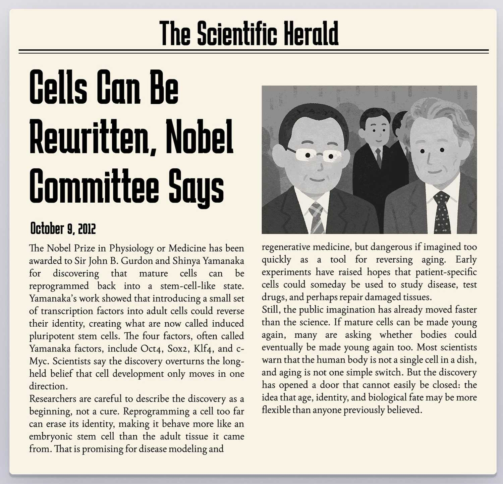
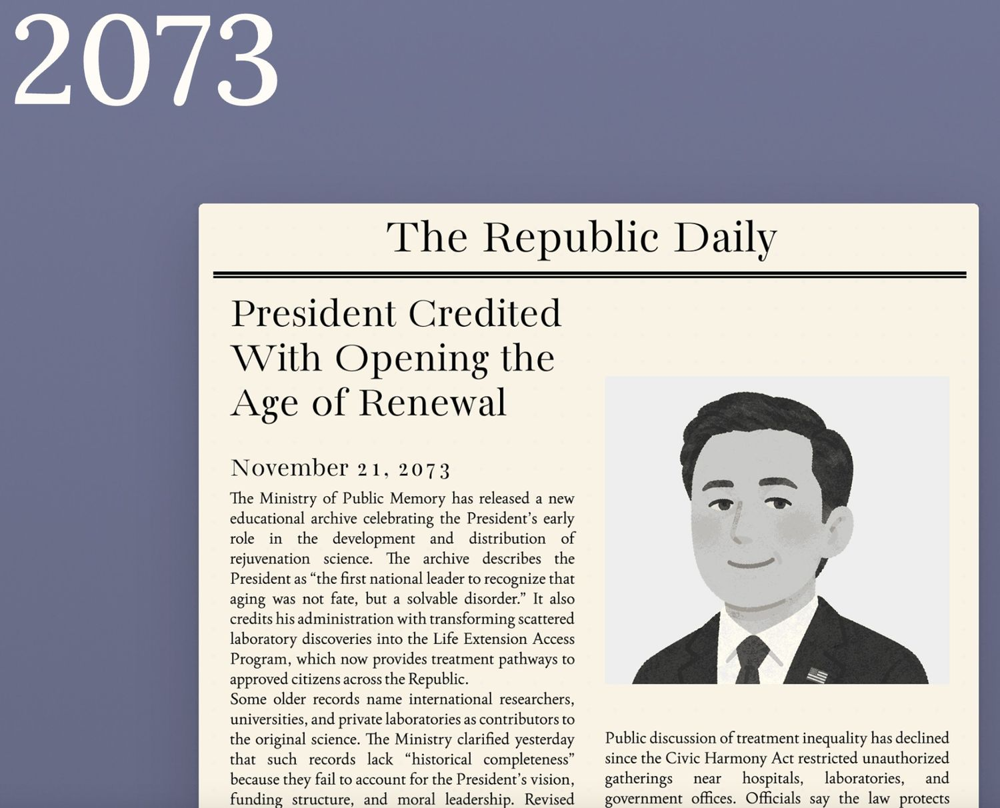
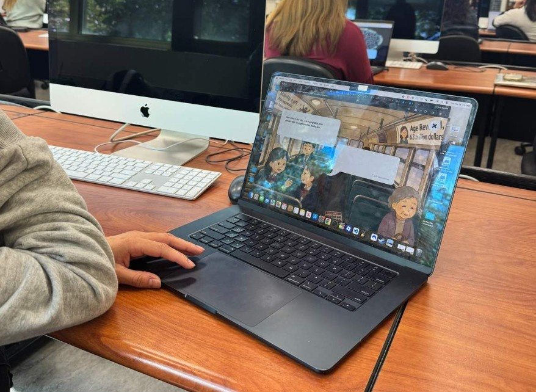
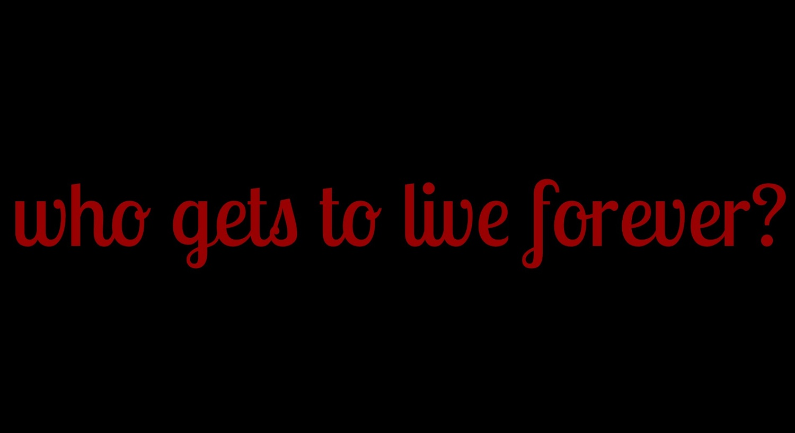

Project Overview
longevity is a game-style interactive narrative that places the user inside a speculative future shaped by reverse aging technology. The project begins with a scrolling newspaper timeline, then moves into a day-in-the-life simulation where the user explores a kitchen, bus, political speech, and phone deposit scene. Through objects, dialogue, sound, and staged interactions, the user gradually learns that life-extension technology exists, but is controlled by the elite and used to preserve political power.
The project asks what might happen if people already in power were no longer limited by age, illness, or generational turnover. Rather than explaining that idea through a lecture, I wanted the user to experience it through a world that feels almost familiar, but increasingly wrong. Ultimately, I wanted the simulation to feel slightly off-putting, so it could shake the user and make them think about the future they want to see.
Target Audience
The target audience is young adults and college students, especially people interested in technology, healthcare, ethics, politics, and inequality. This audience is young enough to imagine themselves living through the future I am designing, and politically aware enough to recognize the real-world patterns behind the speculative premise.
Project Goals
The goal was to create an emotional warning about unequal access to medical innovation. I wanted users to understand that a hopeful technology, if controlled by only a privileged few, could deepen existing systems of wealth and political inequality.
UX Research
I already knew the loose premise I wanted to design: an “immortal dictator” who stays in power because remarkable technology is only available to an elite few. However, I did not want the future to feel completely random or disconnected from reality. To make the world feel like it had some ground to stand on, I researched both reverse aging technology and the ways modern dictators maintain power.
This research helped me develop the storyboard and narrative script at the beginning of the project. It informed which objects the user should inspect, what the newspapers should reveal historically, and how the President’s speech should sound. Instead of making the story only about science fiction, the research helped me connect the fiction to existing patterns in science, politics, wealth, and public image.
My research on modern dictators was especially important for characterizing the President. I wanted him to come across as a subtle manipulator rather than an openly violent ruler. He frames himself as a servant of the people, uses patriotic language, and presents his continued rule as stability. This came from research about how modern authoritarian leaders often rely less on obvious fear and more on image control, misinformation, and a vague sense of dependency.
The reverse aging research helped me write the first two newspaper articles because those pieces are loosely based on real scientific developments and current discussions around rejuvenation research. The rest of the project becomes more outlandish, because the outcome I designed is intentionally a worst-case speculative future. The research made the beginning feel plausible enough that the later dystopian exaggeration could still feel unsettling.
My comparative research also shaped the format. From The Boat, I took inspiration from the use of scroll-based movement, layering, and atmosphere to make the beginning feel like the user is moving through history. From missed messages, I took inspiration from the structure of an illustrated room, a dialogue box, and clickable objects that reveal emotional and narrative context.


Visual Design




I wanted the user to experience a typical day in a citizen’s life in this dystopian future. Visually, that meant the world needed to look similar to the modern day, but with small details that feel strange or uncomfortable. The kitchen, bus, speech, and phone scenes are all recognizable environments, but the objects and text inside them reveal the political and social conditions of the world.
I knew I would not have time to draw every scene in the level of detail I wanted, so I gathered reference images for each scene, edited them together, and used an AI art filter to bring them into a consistent style. I then color graded the scenes so they felt like they belonged in the same visual world. For the inspectable objects, I used the same process but edited many of the details myself, such as the President’s portrait, the calendar writing, and the magazine layout.
The main typeface I used was Lora. I chose it because it matched the slightly soft, illustrated style of the scenes while still being readable for longer passages. I also used italics and weight changes to separate inner thoughts from spoken dialogue, so the user could understand the source of the text without needing too much extra explanation.
The color palette uses a lot of blue-gray undertones, which gives the project a numb, late-day atmosphere. That same muted background makes the yellow exclamation points stand out strongly. Since the user needs to know what is clickable, the bright yellow symbols act as visual prompts that clearly separate interactive elements from the environment.
The transitions between scenes are intentionally soft and cinematic. I wanted the crossfades to imply movement through time and space without feeling too abrupt. The Animate on Scroll effects in the newspaper sequence were also chosen to slowly transport the user from the present into the future, so the dystopian world feels like something that developed gradually rather than appearing all at once.
User Interface
The project presents a lot of text, so I designed the interface to reduce cognitive load. Instead of showing full speeches or thoughts all at once, the dialogue boxes reveal one piece of information at a time. The “click to see full text” and “click to continue” states give users control over pacing: they can wait for the typing animation, reveal the rest instantly, or move forward when they are ready.
The newspaper section is text heavy by design, but I used hierarchy to make it scannable. Large headlines carry the main story, so users can understand the timeline even if they do not read every article in full. This supports different reading styles while still communicating the main historical progression.
Clickable elements use cursor changes, hover feedback, button-like shapes, and animated exclamation points. The floating motion of the exclamation points makes them feel separate from the scene itself, which helps users understand that they are prompts to investigate.
Navigation is mostly linear, but I added a chapter menu so the experience is still flexible. Users can move between Newspapers, Kitchen, Bus, Speech, and Phone Deposit, which lets them reread, skip ahead, or return to a scene without restarting the whole project. This reduces frustration and gives users a stronger sense of location inside the narrative.
Example User Tasks
- Scroll through the newspaper timeline to understand how the future society developed.
- Click highlighted objects in each scene to uncover story details.
- Reveal full dialogue instantly instead of waiting for the typing animation.
- Use the chapter menu to revisit earlier scenes or jump forward.
- Complete the phone deposit interaction to reach the final question.


Revisions
User testing showed that the story was interesting and engaging. Testers understood the main topic and got the overall message even with limited testing time. That was important because the project depends on the user gradually realizing how the world works, rather than being told everything directly at the start.
Testing also showed that some parts felt text heavy. None of the users were able to read every available piece of text during testing, so I learned that I needed to give users more control over pacing. In response, I added clearer text states for the typing animation, so the button says “click to see full text” while text is typing and “click to continue” once it is finished.
The transitions between scenes were clear, especially after I added more direct button text. During the phone scene, users took a moment to understand the blue text, but once they read it, the meaning became clear. The idea that the character would have to save for a long time came across successfully.
One major piece of feedback was that users wanted a stronger sense of progress. To address this, I added a chapter menu that shows the current scene and lets users move between sections. This made the linear narrative feel more flexible and helped users understand where they were in the experience.
I also changed the final question from “who wants to live forever?” to “who gets to live forever?” because the original wording made the technology sound more universally available than it actually is in the story. The new question better reflects the project’s focus on unequal access, wealth, and power.
Key Updates From Testing
- Made the scroll instruction larger and easier to notice.
- Added clearer typing instructions for dialogue boxes.
- Added a chapter menu for progress and navigation.
- Changed the final question to emphasize access and inequality.
- Kept the option to further reduce dialogue-heavy moments if the project continued.


Summary
This project helped me flex my creative muscles and combine storytelling, interaction design, visual design, and technical implementation into one cohesive experience. I learned how important pacing is in an interactive narrative. Even if the story is strong, the user still needs clear cues, manageable text, and enough freedom to move through the experience comfortably.
I am most proud of how immersive and detailed the world feels. The project has many small pieces — the newspaper timeline, the kitchen objects, the bus dialogue, the speech, the sound, the phone interaction, and the final question — but they all support the same larger message. I am also proud that the mechanics feel smooth and that I was able to anticipate many things users might try while interacting with the piece.
The most challenging part was drafting the story and scripts. I do not usually think of myself as a writer, so creating a plot that felt realistic, emotional, and not too heavy-handed was a careful balancing act. The most rewarding part was watching people try the project and understand the message and feeling I wanted to convey.
Because this project is so dependent on emotion, user reactions became a measure of whether the design was working. When testers felt unsettled, curious, or reflective, it showed me that the visuals, interactions, and writing were working together to create the experience I intended.